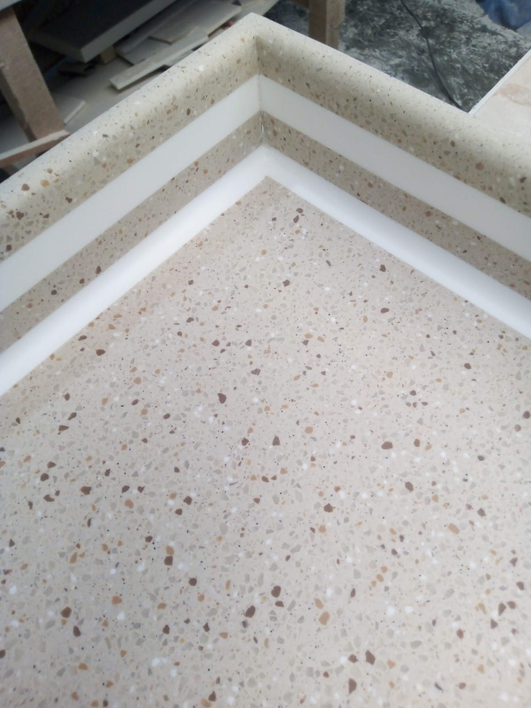
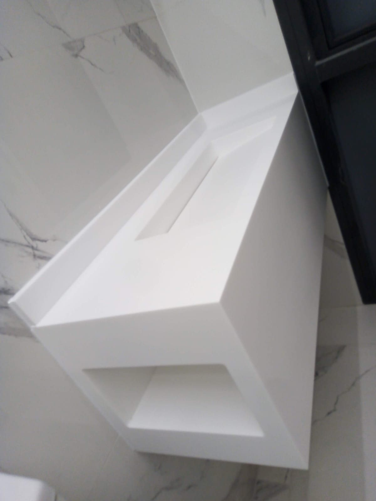
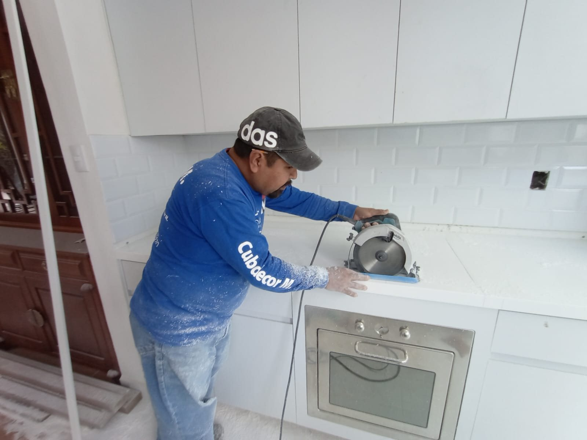
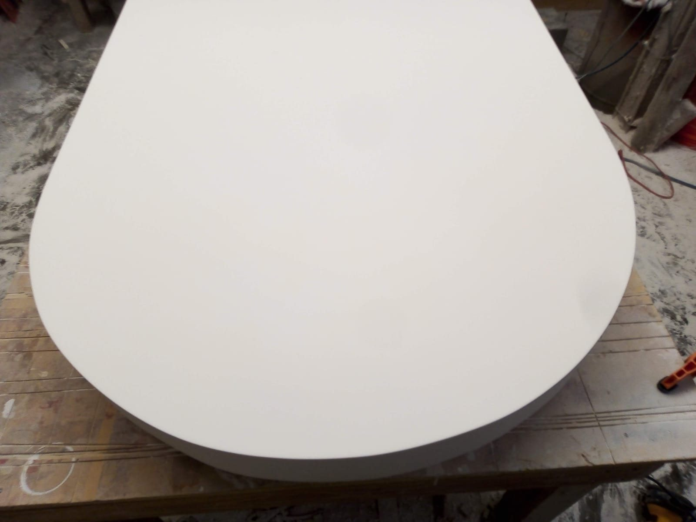
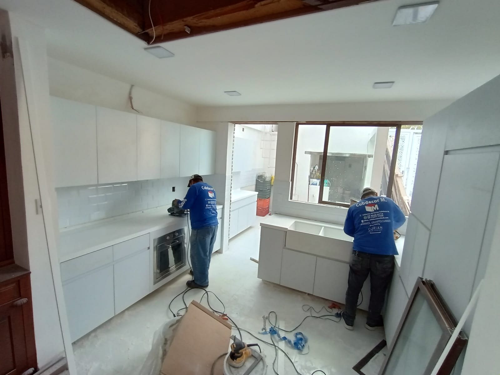

Color en toda la masa
El color y los minerales atraviesan todo el espesor, así que una marca se lija y se pule.
CUBDECOR
Preparando tu espacio
Fabricamos e instalamos cocinas, baños y barras en Corian de 12 mm, a la medida exacta de tu espacio.
Las juntas se ensucian, se abren y se notan. Por eso fabricamos cubiertas de Corian en una sola pieza continua: resina acrílica, minerales y aluminio, cortados y pulidos a la medida de tu espacio.
El material
Corian combina resina acrílica, minerales y aluminio en una masa homogénea. Por eso se repara, se limpia fácil y se moldea.

El color y los minerales atraviesan todo el espesor, así que una marca se lija y se pule.
Los cantos pueden engrosarse y moldearse para dar el acabado que buscas.

Tarjas y lavabos del mismo material, sin bordes donde se acumule la suciedad.
No absorbe líquidos ni olores. Se limpia con agua y jabón.

Cortes y uniones ajustados directamente en tu obra, para que cada pieza encaje.
Cocinas, baños y barras instalados por nuestro equipo.

Colores y acabados
Estos son algunos tonos que hemos instalado. Si tienes otro en mente, lo buscamos.
Luminoso y limpio. Hace que cocinas y baños se vean más amplios.
Catálogos
Descarga nuestros catálogos con los colores disponibles y los modelos de tarjas y lavabos. Cuando algo te guste, mándanos el nombre por WhatsApp.
Más de 40 tonos de superficie sólida, con su descripción y fotos de ambientes para imaginarlos en tu espacio.
20 colores de la línea Novanite, una superficie sólida no porosa, de alta dureza y fácil mantenimiento.
9 modelos con sus medidas y profundidades, para elegir la pieza de tu cocina o baño.
¿Ya viste uno que te gustó?
Cotizar mi elección
Vamos a tu espacio, tomamos medidas al milímetro y revisamos muebles, tarjas y tomas de agua.
Eliges el tono, el canto y la forma de la tarja. Te explicamos cada opción para decidir con calma.
Cortamos, unimos y pulimos la cubierta en nuestro taller, cuidando que las uniones queden invisibles.
Colocamos la pieza, sellamos y dejamos todo limpio. Tu cocina o baño queda listo para usarse.
Lo que más nos preguntan antes de empezar un proyecto.
Resolver mis dudasEs una superficie sólida de resina acrílica, minerales y aluminio. El color atraviesa todo el espesor, que en nuestras cubiertas es de 12 mm.
Unimos las piezas con adhesivo del mismo tono y las pulimos hasta que la unión queda prácticamente invisible.
Al ser un material homogéneo, se lija y se pule para renovar la superficie. La mayoría de las marcas de uso diario se corrigen así.
Sí. Es resistente y no porosa. Para ollas recién salidas del fuego recomendamos usar un protector, como con cualquier cubierta.
Sí. Fabricamos tarjas y lavabos del mismo material, sin bordes ni uniones donde se acumule la suciedad.
También instalamos mármol, granito y cuarzo. Cuéntanos qué buscas y te recomendamos la mejor opción.
Depende de las medidas, el tono y los detalles. Con tu proyecto en WhatsApp te damos una cotización y una fecha estimada.
Cotización
Déjanos los datos básicos y te respondemos por WhatsApp con material, medidas y una propuesta clara.
55 7527 7455